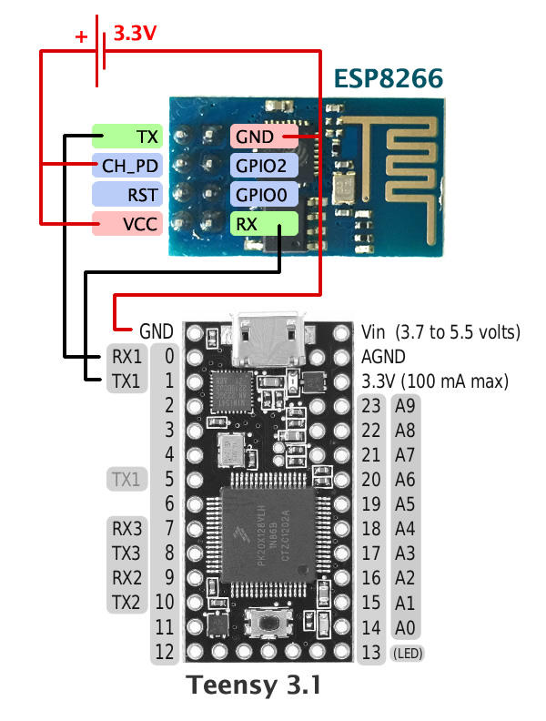
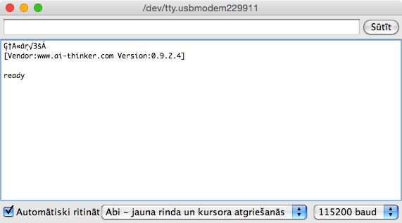
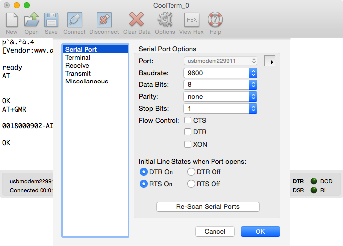

Recently I ordered two Espressif ESP8266 breakout modules labeled “ESP8266 Version 01” from hermann_shopp on ebay. It is one of the coolest little chips for makers to have these days — it connects to the internet, has an open SDK with complete toolchain, multiple third-party firmware options such as Micro Python and NodeMcu (LUA). Even Hackaday loves it.
Here is a quick overview of what I have learned so far.
ESP8266 Breakout Module Pinout
There are multiple breakout modules available for this chip. Here is the pinout for the version (possibly ESP-01) that I got:

- TX (UART TX)
- RX (UART RX)
- CH_PD (chip power down, should be pulled high to start the chip)
- RST (reset)
- GPIO0 and GPIO2 (general purpose input/output pins)
- VCC (power supply 3.3V, max. ~300mA)
- GND
Please note that ESP8266 requires 3.3V power supply and a lot of current (up to 300mA) during wireless transmission. I used two AA batteries in series to power the module.
Secondly, remember that UART pins are marked with respect to the device itself, therefore TX pin from the module should be conntected to the RX pin on Arduino, like so:
TX (ESP8266) to RX (Arduino)
RX (ESP8266) to TX (Arduino)
Interfacing with ESP8266
The default serial baud rate for talking to these modules is 9600 while most of the other guides online tell you that the baud rate is 115200. It depends on the firmware so be sure to try out different baud rates. A good indication of correct wiring and incorrect baud rate is when you see garbled text returned from the module in the serial monitor.
I decided to use the awesome Teensy 3.1 to talk to ESP8266 since I no longer had my USB-to-UART cable available. The idea is to have a very simple program on Teensy that relays all the Serial data from the module attached to Serial1 pins RX1 (pin 0) and TX1 (pin 1) to the Serial interface that Teensy uses for communicating with your computer:

Using the following Arduino sketch we’re able to use almost any Arduino-compatible microcontroller that supports UART and serial interface as an UART-to-USB module for communicating with ESP8266 instead of an FTDI chip.
We simply pipe all bytes from ESP8266 connected at Serial1 (note the 1 at the end) interface to Serial which is available from the Arduino serial port monitor.
void setup() {
// Setup computer to Arduino serial
Serial.begin(9600);
// Setup Arduino to ESP8266 serial
// Use baud rate 115200 during firmware update
Serial1.begin(9600);
}
void loop() {
// Send bytes from ESP8266 to computer
if ( Serial1.available() ) {
Serial.write( Serial1.read() );
}
// Send bytes from computer back to ESP8266
if ( Serial.available() ) {
Serial1.write( Serial.read() );
}
}
Once everything is wired up correctly you should see the following message in the Arduino serial monitor sent by the module during the boot process:

[Vendor:www.ai-thinker.com Version:0.9.2.4]
ready
Now you are able to interact with the module using a set of AT commands. Here is the version information as reported by AT+GMR:
AT+GMR
0018000902-AI03
OK
where 0018 is supposedly the SDK version and 000902 is the AT version. I have no idea what AI03 stands for.
Firmware Updates
ESP8266 supports firmware updates over the same serial interface with a few changes to the setup — you need to pull the GPIO0 pin to ground and use a 115200 baud rate from Teensy to the module.
There are several tools available for updating the firmware:
- Windows only ESP8266 Flash Downloader and
- Cross-platform esptool (Python)
The protocol for uploading the firmware binaries is well known:
The bootloader protocol uses SLIP framing. Each packet begin and end with 0xC0, all occurrences of 0xC0 and 0xDB inside the packet are replaced with 0xDB 0xDC and 0xDB 0xDD, respectively.
Inside the frame, the packet consists of a header and a variable-length body. All multi-byte fields are little-endian.
Cloud Updates
Espressif has enabled over-the-air updates for all chips with firmware version greater than 00170901. Make sure your module is running this firmware version by executing the AT+GMR command before trying to do the cloud update.
hi.
es netieku tālāk par AT komandām, tās vienkāši neizpildās :( caur FTDI .. http://s2.postimg.org/l9pq7t5m1/Screen_Shot_2014_12_05_at_16_59_11.png t.i. nekas nenotiek
Izskatās cerīgi! Katra AT komanda ir jābeidz ar “CR+LF” jeb “\r\n” baitiem. Te ir aprakstīts, kā to iestatīt CoolTerm gadījumā.
tas viss jau izdarīts, nepalīdz :(
izmēģināju CoolTerm, Arduino, screen + vēl pāris win termināļus. un tas man ir uz visiem 5 čipiem. http://www.ebay.co.uk/itm/201205524305?_trksid=p2060778.m2749.l2649&ssPageName=STRK%3AMEBIDX%3AIT
btw es kkā neredzu iepriekšējos komentus
Tad, manuprāt, vienīgais iemesls varētu būt bojāts TX vads no FTDI uz moduļa RX, jo FTDI RX gals acīmredzot strādā labi, saņemot ielādes informāciju no moduļa. Varbūt ir kāda cita iekārta ar kuru pamēģināt UART savienojumu, piemēram Raspberry Pi, lai pārliecinātos, ka vaina nav FTDI pieslēgumā?
nu arī nevar saprast, jo pēc ‘send’ uz čipa nomirgo zilā gaismiņa us super īsu brīdi
Varbūt vari kādā dienā atnest vienu uz Stabu 17, kur man ir birojs un tad varam pamēģināt ar manu slēgumu. Atsūti gan e-pastu pirms tam.
Šorīt pamēģināju ar CoolTerm un viss strādā ar šādiem uzstādījumiem (visi noklusētie):

Kaspar, esi sastapies ar tādu problēmu, kad šito čipu pievieno pie arduino pat pietiek tikai vcc savienot ar 3.3v un GnD ar GnD, kā rezultātā iedegas, protams, uz čipa diodes, bet uzreiz dators restartējas, tas pats notiek arī ja pievieno rx/tx un zemi.
Vaina čipā vai kaut ko pa vidu vajag ielikt kādu rezistoru vai ko tādu?
Man tā ir bijis ar citiem slēgumiem, kas no datora USB pieslēgvietas sāk ņemt vairāk kā 50mA vai 100mA strāvas. Ja pareizi saprotu, tad Tavā gadījumā VCC gan nenāk no datora, bet gan ārēja avota, ja? Tādā gadījumā gan ir grūti pateikt, kas par vainu.
labi, vēl paliek kkāds nix terminālis un PI pēc tam nav ideju.. negribētos pie RF atgriezties :/
Kaspar, es biju slēdzis pie arduino nano un nano bija pievienots datoram. Aptuveni pēc 2 sekundēm, pie vcc no moduļa pieslēdzu arduino nano 3.3v tā dators restartejās.
Tad problēma noteikti ir strāvas daudzums, ko modulis grib ņemt no 3v3 izejas (kas patiesībā nāk no FTDI čipa) un attiecīgi USB avota. Pamēģini darbināt moduli no atsevišķa 3V avota (piemēram, divas AA baterijas).
hmm nu tad parasti mac bļauc, ka devaiss grib ņemt pa daudz un tiek tas tiks atslēgts, bet restartam imo nav jābūt
Šovakar meklēju Google pēdējās nedēļās jaunumus par ESP8266. Biju ļoti pārsteigts ieraudzīt latvisku vārdu Kaspars. Un vēl lielāks pārsteigums bija ieraudzīt foto “Vēsā mierā” filmas pirmizrādes vienu no galvenajiem varoņiem. Tā bija ļoti iespaidīga filma.
Es nodarbojos ar elektroniku un lāzeriem. Tagad strādāju Vecrīgā Šķūņu ielā 4 Atomfizikas un Spektroskopijas Institūtā.
Pirms 5 gadiem Minhenē biju uztaisījis elektrovelosipēdu.
Tagad man hobijs ir visādas IoT lietiņas.
Esmu paguvis sablogot arī par ESP8266:
http://www.element14.com/community/groups/internet-of-things/blog/2014/11/19/esp8266-wi-fi-arduino-upload-to-xively
Sekošu līdzi Taviem blogiem. Varbūt būs kaut kādi interesanti pielietojumi.
Paldies par komentāru, Jāni! Kā jau vienmēr — Latvija ir ļoti maza :) Būtu interesanti kādreiz saskrieties, kad būs brīvāks jaunajā gadā. Es padošu ziņu uz e-pastu.
Šodien noņēmos ar ESP8266 programmēšanu, izmantojot viņu SDK un toolchain. Plānoju par to uzrakstīt, kad būšu pabeidzis pirmo prototipu.
Izlasiju, vieglak ir ieprogrammeet vienreiz lua firmware un peec tam var ar lua komandaam uzrakstiit savu algoritmu caur konsoli un tas saglabaajas peec restarta. Piemeeram zinjo par pumpja iesleegsanos.
http://benlo.com/esp8266/#rain
Priecājos, ka LV vairāki cilvēki mēģina ESP8266. Kad sanāk būt Vecrīgā var man uzzvanīt un atnākt ciemos uz Institūtu Šķūņu 4 pretī Hesburgerim, Random veikalam. Mēs diezgan daudz paši taisām elektroniku un programmējam.
Jani, piedava elektronikas interesu pulciņu veidot par šo temu ;)?
Iesaku salodeet 3.3V regulatoru piemeeram LM1117. Tam vajag veel 2 kondensatorus. Tas taisiis 3.3V no USB 5V.
Jā varetu veidot interešu pulciņu. Open Source ir tāda priekšrocība ka katram nevajag visu no nulles izdarīt un var tikt tālāk uz priekšu.
aizgāja man tas čips – vnk paņēmu citu arduino :/
čips barojas no 4.5v barokļa, rx/tx pa tiešo uz arduino
caur FTDI pa tiešo joprojām nekā.
ESP8266 uz Serial @ 9600, FTDI uz SoftwareSerial @ 5700 debugošanai
Labi, ka bija kāds Arduino, ar ko pamēģināt. Ko būvēsi?
tiesa pie mana wifi pieslēdzas ar ~3 meģinājumu (wpa2 63 charu parole);
šad tad timeouti pieprasot kādu hostu – gribētos saprast ar cik voltiem tad īsti būtu jāstrādā.
Man gan ļoti ātri pieslēdzas pie WPA2 — domāju, ka mazāk kā pus sekundē. Specenē rakstīts (PDF), ka ESP8266 čipam VDDIO ir 3.6V un pēc skata sķiet, ka uz moduļa nav sprieguma regulatora.
Tīkla SSID un parole tiek glabāti moduļa atmiņā un pēc pārstartēšanas tam vajadzētu pašam ļoti ātri pieslēgties pie tīkla. Esi mēģinājis?
Pieslegshanaas aatrumu var parbaudit pec IP adreses sanemsanas ar komandu AT+CIFSR
arduino (barebone) pilna māja :D
gribās dabeigt wireless temperatūras/mitruma sensorus + termogavlas regulatoru.
līdz šim izmantoju RF (433 / 315) bet nu tas bija fakaps, visi dačiki jābūto pēc kārtas, lai ‘nepārklātos pārraide’. ar šo wifi cita lieta :D otrā galā sēž priecīgs rpi ar rest api un miers.
temperatūrai un mitrumam DHT22
jāsameklē tikai, kas galvas grozīs. baigi daudz _lētu_ variantu nav
Izklausās interesanti! Varu iedot pārīti nRF24L01+ moduļu, ja neesi vēl mēģinājis. Esi domājis kaut ko uzrakstīt par šo projektu? Man būtu ļoti interesanti palasīt un papētīt!
Kaspar, pats ar nrf24l01 esi kaut ko sledzis? Tur ja pareizi atceros bija visi 8 pini jaizmanto un lai parsūtītu stringu vai integer čakars ne pa jokam.
tikko pamērīju – arduino UNO + esp8266 + DHT22 ‘miera’ režīmā tērē ~50-70mA, kad esp8266 kko sūta (veic web requestu) uzlec uz ~100mA, bet viņu teiktie ~300mA nav pat tuvumā
Ja ar multimetru mēra, tad man arī tāpat sanāca. Bet multimetrs droši vien rāda vidējo vērtību un pīķi varētu būt 300 mA.
Pats interesantākais, ka ar CH_PD=GND var iegūt super mazu gulēšanas strāvu 16 uA.
tas izklausās ļoti jauki :)
lūk te eksperimenti ar arduino low power un sleepošanu http://www.disk91.com/2014/technology/hardware/arduino-atmega328p-low-power-consumption/
Sveiciens visiem!
Patīkami, ka LV vēl kāds kaut ko ņemas ar šādām lietām. Pirms kāda laiciņa saņēmu savus pirmos ESP, esmu šo to izmēģinājis.
AT komandas – ir OK, strādā. Bet tālāk arī neko neņēmos, pārgāju uz NodeMCU ar LUA. Pozitīvi – ka var iztikt ar vienu pašu ESP moduli, nevajag ne Arduino, ne kādu citu MCU. Programmēšana samērā vienkārša (turklāt – neesmu programmētājs), protams, var jau trāpīties visādi zemūdens akmeņi, par kuriem vēl neko nezinu. Internetā kaudze ar kodiem – DS18B20 temperatūras sensoriem, WS2812 RGB LEDiem utt, primitīviem WEB serveriem, ThingSpeak.com datu logošanai utt. Pārsteidza arī stabilitāte – nekādu problēmu DS18B20 mērījumus sūtīt uz thingSpeak.com arī 5 dienas no vietas ik pēc 30 sekundēm.
Vēl ko varu pieminēt – smuki jāuztaisa barošana – pietiekamas amperāžas un ar filtrējošiem kondensatoriem, it īpaši, ja ir pielikts kāds relejs, kurš var iešvunkāt barošanu un izraisīt ESP uzkāršanos.
Jauki, ka forumā paradās jaunumi.
Man paaris meenesus nekaa jauna nav. Konkurss par gaisa kvalitaates sensoriem beidzies.
http://www.element14.com/community/community/design-challenges/in-the-air-design-challenge/blog/2015/01/31/in-the-air-challenge-ndir-co2-meter-connected-to-iot-via-cc3200
Konkursā izmantoju TI CC3200 WiFi bet pēc tam pārgāju uz ESP jo tas ir kompaktāks. CO2 mērītājs ar pielikto Arduino +ESP stradā bez uzkāršanās. Sobrīd lietoju Xively, bet laikam būs jāiemācas ar ThingsSpeak rīkoties jo Xively datu attēlošanai ir visādas īpatnības.
Nākamā doma bija pielikt ESP vannasistabas svariem.
es, savuārt, laikam pārslēgšos uz NRF24L.. pa daudz ēd tas ESP (ar visiem dīp slīpiem etc). es varēju ~3 nedēļas ar l500 mAh izvilkt :/ (DHT sensor, arduino barebone, ESP8266), sūtot 1x 10min. tiesa, bača no kkāda veca fočuka, varbūt ar jaunu jāmēģina.
btw ja nu kādam noder kods https://gist.github.com/ezisxl/8fd886d377c94c9d1ced
Thank you for this article – it’s very helpful! I have two questions:
1. Is it possible to get the Teensy to power itself + a connected ESP8266 if it’s plugged into a computer’s USB port?
2. How can I set up a Teensy to receive instructions from my website via the ESP8266?
Thank you!
1. ESP8266 is reported to draw up to 215mA during transmissions while the 3.3V voltage regulator on Teensy can provide only up to 100mA. It should work but not very reliably. It is recommended to use an external battery to power the ESP8266.
2. You should start by getting ESP8266 to accept incoming TCP connections (running a TCP server) and check if you can connect to it from your local network. Afterwards you need to configure your internet router to forward the incoming connections to the appropriate port on ESP8266.
Jaunumi: var ESP programmēt no Arduino IDE 1.6.
Piemēram pievienot ESP platītei DS18B20 temperatūras sensoru un sūtīt vērtības uz Thingsspeak.
Vakar saliku Instructable par ESP Wi-Fi platīti.
http://www.instructables.com/id/ESP8266-webservver-programmed-through-Arduino-IDE-/
Lieliski! Paldies, ka padalījies ar saiti.
vari pakomentēt, kā ar enerģijas patēriņu? es tieši dēļ tā (arī deep sleep) atteicos no esp un pāreju atpakaļ uz rf, kas uztur ack..
ESP kad darbojas patērē ap 75 mA, kad deepsleep ap 30 uA. Mērīju pats.
Mīnuss tāds, ka paiet kādas 12 s kamēr piekonektējas, nosūta.
432 MHz sensors noraidītu datus apmēram 100 ms laikā un taupītu baterijas daudz labāk.
Hey, you shouldn’t have the RST pin dangling around.
That is a very good point!
I get random resets with ESP8266 with 3 modules. For temperature monitoring it is no problem, but for counting electricity or gas usage it is unusable because of that. Soldered Reset pin to VCC, tried different power supplies, soldered voltage regulator close to the ESP board. And resets still happen once in a while. Many people report same issue if one googles.